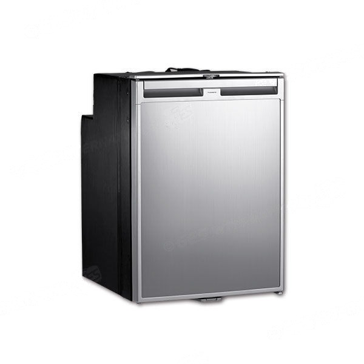

I modelli ExtraCOOL a 12 V che vendiamo, con litri, freezer, dimensioni, peso e prezzi aggiornati.
per un frigorifero a compressore per camper.
Prezzi letti dal nostro catalogo. Montaggio nella nostra officina di Tivoli per i prodotti acquistati da noi.
Scegli il modello
Reso entro 14 giorni. Il confronto completo di tutti i modelli è qui sotto.
Il frigorifero a compressore lavora a 12 V, raffredda in modo efficiente anche con temperature esterne elevate e non consuma gas né richiede areazione esterna. Qui trovi i modelli ExtraCOOL che abbiamo a catalogo, con i dati tecnici dichiarati dal costruttore. I prezzi si aggiornano da soli.
| Modello | Capacità | Dimensioni (L x P x A) | Peso | Prezzo | Spedizione |
|---|---|---|---|---|---|
| ExtraCOOL FRG547 | 47 L (freezer 4,5 L) | 380 x 510 x 530 mm | 18 kg | 579,99 € | Spedizione gratuita |
| ExtraCOOL FRG551 | 50 L (senza freezer) | 402 x 485 x 670 mm | 24 kg | 429,99 € | Spedizione calcolata nel carrello |
| ExtraCOOL FRG564 | 64 L (freezer 10,5 L) | 419 x 450 x 820 mm | 24 kg | 809,99 € | Spedizione calcolata nel carrello |
| ExtraCOOL FRG571 | 70 L (senza freezer) | 460 x 460 x 820 mm | 24 kg | 469,99 € | Spedizione calcolata nel carrello |
| ExtraCOOL FRG584 | 83 L (freezer 10 L) | 520 x 500 x 821 mm | 27 kg | 849,99 € | Spedizione calcolata nel carrello |
| ExtraCOOL FRG583 | 83 L (freezer 10 L), con passaruota | 520 x 580 x 821 mm | 23,5 kg | 879,99 € | Spedizione calcolata nel carrello |
| ExtraCOOL FRG587 | 87 L (freezer 10,5 L) | 419 x 485 x 976 mm | 28 kg | 969,99 € | Spedizione calcolata nel carrello |
| ExtraCOOL FRG575 | 175 L doppia porta (frigo 137 L + freezer 38 L) | 523 x 593 x 1245 mm | 39,5 kg | 1169,99 € | Spedizione calcolata nel carrello |
I consumi dichiarati dal costruttore sono nella scheda di ciascun modello: apri il frigorifero che ti interessa per vederli. A catalogo ci sono anche altri 8 modelli di frigorifero a compressore: aprili dalla categoria Cucina per vederne le schede.
Dicci che camper hai e come lo usi: ti consigliamo il modello giusto prima di ordinare. Chiamaci al 348 990 5455 o scrivici dal sito.
Chiedi un consiglio